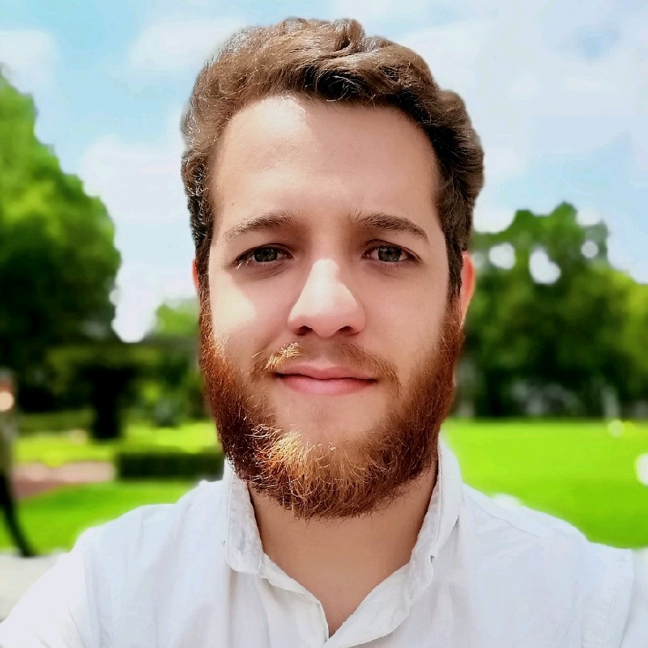

I'm a computational neuroscientist and postdoc at HHMI Janelia, where I study how populations of neurons give rise to cognition and behavior. I'm deeply interested in what the brain can teach us about building better AI, and in bringing that perspective to healthcare, drug discovery, and the science of intelligence.

I've always been drawn to problems that sit at the edges of disciplines. The brain, more than anything else, seemed like the place where all those edges converge: biology, physics, engineering, computation, philosophy. That pull led me to study biomedical engineering at ITESM, where I got my first real taste of working with biological signals and building things that try to make sense of them.
From there, I went to Guadalajara to do my PhD at the Medina-Ceja lab. My thesis focused on the hippocampus, specifically on a phenomenon called fast ripples: brief, high-frequency electrical events associated with epilepsy and possibly with memory consolidation. Using a combination of electrophysiological recordings, wavelet analysis, and Bayesian causal inference, I mapped a novel interaction between hippocampal subregions and described its likely role in generating these events. It was messy, hard, and genuinely exciting work.
Midway through the PhD, I realized that the data problems in neuroscience were getting ahead of my statistical toolkit. So I completed an MIT MicroMaster in Statistics and Data Science in parallel, not to check a box, but because I needed to understand probability theory and machine learning at a deeper level to make sense of the data I was collecting. That program reshaped how I think about inference, uncertainty, and model building.
I'm now a postdoc at Marius Pachitariu's lab at HHMI Janelia, where we work at the intersection of mechanistic cognitive science, computation, and theory. We record from populations of up to 50,000 neurons while mice perform complex behavioral tasks, and use ML to understand the structure of those population dynamics. My current focus is on generalization, the ability to extract principles from limited experience, which I find fascinating both as a property of biological brains and as a fundamental gap in current AI systems.
The same skills that let me work with large-scale neural data (designing statistical pipelines, building predictive models, reasoning carefully about causality and uncertainty) translate directly to the kinds of problems I'm most excited about in industry: understanding disease from complex biological signals, making sense of clinical data, and developing AI tools that are grounded in how biological systems actually work. I'm actively exploring roles in healthcare AI, computational biology, and data science, looking for teams that care as much about the science as the engineering.
Crunching complex data to gain understanding: what changes in the hippocampus during epilepsy, how we can uncover sensory representations in the brain, what a minimal model of a visual neuron actually needs, or even how economic ecosystems self-organize. The common thread is taking messy, high-dimensional systems seriously and building models that make them legible. Google Scholar →
The methods I use every day in neuroscience (building statistical models of complex systems, reasoning about causality, working with high-dimensional biological signals) are exactly what's needed in healthcare AI and pharma. I'm not making a leap from one world to another; I'm applying the same thinking to questions with direct clinical relevance.